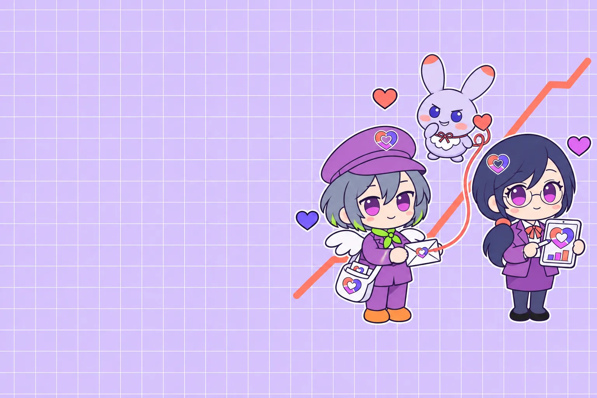
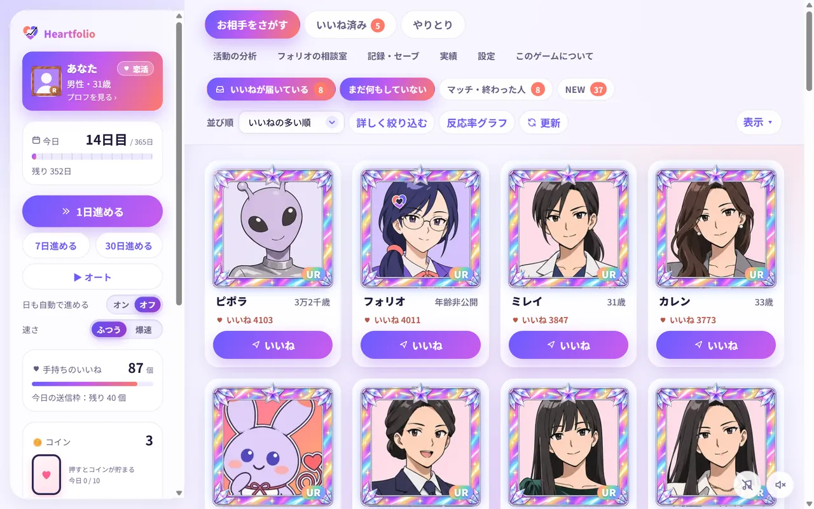
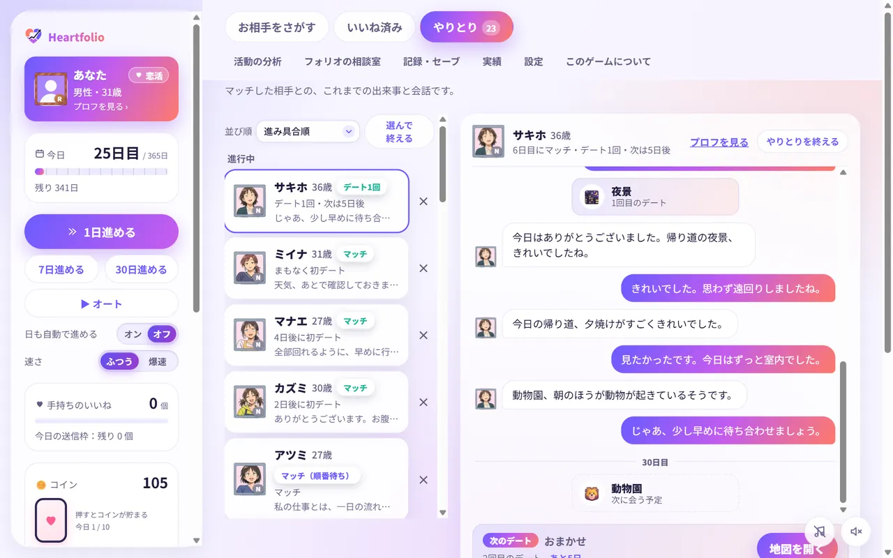

マチアプ攻略シミュレーター
マチアプ攻略シミュレーター
いいねは有限。あなたの恋愛ポートフォリオ、最適ですか？
マッチングアプリを題材にした恋愛シミュレーションゲームです。月の初めに配られるいいねを、だれに送るか。返ってくる見込みを読みながら、期限までに恋人を探します。
ブラウザで遊ぶ
無料・登録なし。スマホでも遊べます
これまでに 回、終わりまで遊ばれました

BY THE NUMBERS
数字で見る Heartfolio
- モード 4つ 恋活・婚活・友達作りと、自分を育てる下剋上（β）
- 婚活の活動期間 最長730日 恋活は365日、友達作りは30日
- 実績 30個 取った実績から、称号を1つ付けられます
- お相手 1000人以上 プロフも好みも、一人ひとり違います
- プレイ 0回 これまでに終わりまで遊ばれたゲームの数
HOW TO PLAY
いいねから、ゴールまで
いいねを送ったら、日を進めます。返ってきた相手とマッチして、やりとりとデートを重ねていきます。
いいね
気になる人に送る
マッチ
返ってきたら、やりとりが始まる
デート
地図から行き先を選ぶ
ゴール
恋人・婚約・友達に


EXPLORE
もっと知る
%20scale(.52)%20translate(-50%20-48)'/%3e%3c/mask%3e%3c/defs%3e%3cg%20mask='url(%23ring)'%3e%3cpolygon%20points='50,48%2050,-50%20150,-50%20150,148'%20fill='%236b5cff'/%3e%3cpolygon%20points='50,48%20150,148%20-50,148%20-50,66'%20fill='%23c25cf0'/%3e%3cpolygon%20points='50,48%20-50,66%20-50,-50%2050,-50'%20fill='%23ff7a6b'/%3e%3cg%20stroke='%23fff'%20stroke-width='4'%3e%3cline%20x1='50'%20y1='48'%20x2='50'%20y2='0'/%3e%3cline%20x1='50'%20y1='48'%20x2='110'%20y2='108'/%3e%3cline%20x1='50'%20y1='48'%20x2='-10'%20y2='59'/%3e%3c/g%3e%3c/g%3e%3cg%20stroke='%23fff'%20stroke-linecap='round'%20stroke-linejoin='round'%20fill='%23fff'%3e%3cpolyline%20points='26,64%2040,53%2051,59%2081,23'%20fill='none'%20stroke-width='12'/%3e%3cpolygon%20points='89,13%2087.5,28%2075.5,19'%20stroke-width='6'/%3e%3c/g%3e%3cg%20stroke='%231f1b3a'%20stroke-linecap='round'%20stroke-linejoin='round'%20fill='%231f1b3a'%3e%3cpolyline%20points='26,64%2040,53%2051,59%2081,23'%20fill='none'%20stroke-width='6'/%3e%3cpolygon%20points='89,13%2087.5,28%2075.5,19'%20stroke-width='2'/%3e%3c/g%3e%3c/svg%3e)